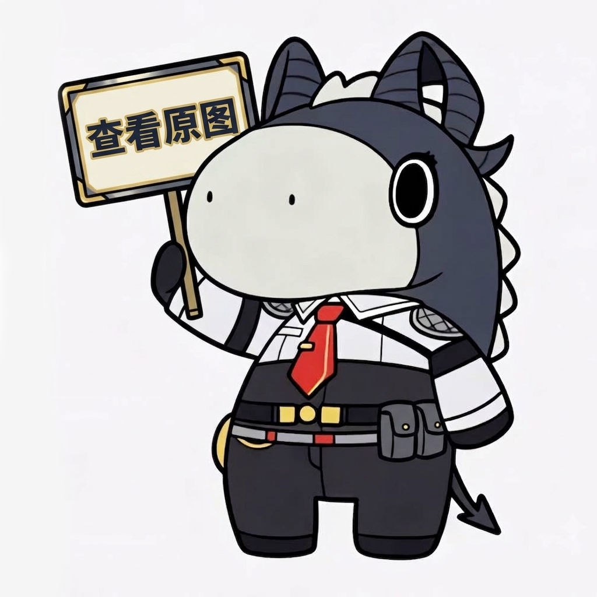

1选择要伪装的真实图片
支持单张或批量多选 JPG、PNG、WEBP 静态图与 GIF 动图
点击或拖拽图片到这里 (可多选)
手机相册中支持长按批量多选
2
伪装封面

内置默认封面
3
封面补齐底色
柔和白
当原图尺寸大于或宽高比不同于封面时，四周将使用所选底色进行留白补齐：
黑色
白色
红色
绿色
蓝色
黄色
🎉 伪装生成成功 (双重视角预览)
对方视角(聊天列表/缩略图)
真实内容(点开/还原所见)
1选择收到的伪装图片
选择在聊天软件中保存下来的伪装 .png 文件进行提取还原
点击或拖拽伪装文件到这里
支持一次性选择多个伪装图片文件批量提取
✨ 成功提取还原真实图片
伪装封面
这张伪装图对外显示的封面图 · 点图可看大图
1拆解 GIF 动图
将 GIF 动图逐帧拆解为 PNG 图片，可一键保存全部帧
点击或拖拽 GIF 动图到这里
支持一次性选择多个 GIF 动图批量拆解
✂️ 动图拆解完成
本地离线缓存管理
当前已记录 0 个文件 (占用 0 B 浏览器本地存储)
开发者与开源项目
本项目由 Zeraphyms 所制
GitHub 仓库: https://github.com/Zeraphyms/PNG-phantom-tank
GitHub 仓库: https://github.com/Zeraphyms/PNG-phantom-tank
工作原理
本工具采用 APNG (Animated Portable Network Graphics) 特殊隐写机制：
• 默认静止帧 (IDAT)：写入伪装封面图片。
• 隐藏动画帧 (fcTL+fdAT)：写入你的真实原图或动态 GIF。
• 聊天软件在相册缩略列表中只能看到封面；对方点开或使用本工具点击「还原真图」即可查看和提取完整真实内容。
• 默认静止帧 (IDAT)：写入伪装封面图片。
• 隐藏动画帧 (fcTL+fdAT)：写入你的真实原图或动态 GIF。
• 聊天软件在相册缩略列表中只能看到封面；对方点开或使用本工具点击「还原真图」即可查看和提取完整真实内容。
发送到 QQ / 微信重要提醒
• QQ/微信以默认「普通图片」方式发送会进行二次有损转码，剔除动画扩展帧导致隐藏内容丢失！
• 正确发送方式：
1. 手机 QQ 发图时务必勾选【原图】；或点击加号以【文件】形式发送 .png 文件。
2. 对方保存文件后打开本网页点击「还原真图」，即可无损提取出原图 / 动图！
• 正确发送方式：
1. 手机 QQ 发图时务必勾选【原图】；或点击加号以【文件】形式发送 .png 文件。
2. 对方保存文件后打开本网页点击「还原真图」，即可无损提取出原图 / 动图！
纯本地安全与隐私
• 100% 纯本地浏览器端处理，所有图片合成与还原均在您的手机/电脑内存中完成，绝不上载任何外部服务器，安全保密。
1选择图片
支持 JPG、PNG、WEBP 等常见格式，超过 800 万像素或单边超 4000 像素会自动等比缩小
点击或拖拽图片到这里
处理全程在本地浏览器完成，不上传任何服务器
2处理方式
混淆可叠加多次；若图片被混淆过，需要相同次数的解混淆才能还原
原图
处理结果